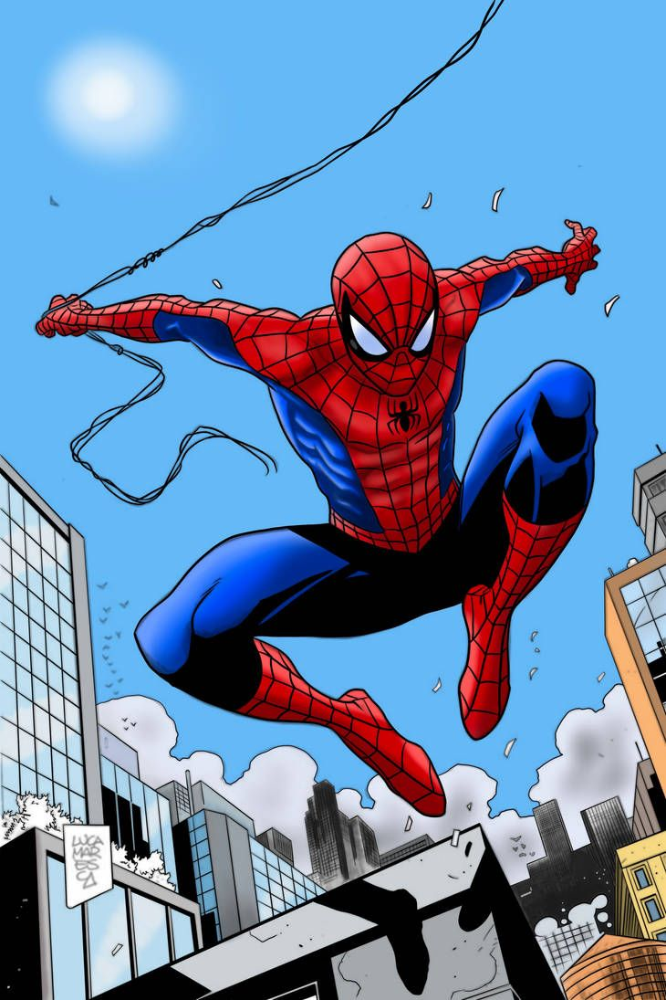

<!DOCTYPE html>
<html lang="en">

<head>
    <meta charset="UTF-8">
    <meta name="viewport" content="width=device-width, initial-scale=1.0">
    <title>Document</title>
    <link rel="stylesheet" href="style.css">
</head>

<body>
    <!-- <h1>Spider Man</h1>
    

    <h2>About</h2>

    <p id="description"> Spider-Man is one of the most iconic superheroes in pop culture, created by writer <a href="">Stan Lee and
            artist Steve Ditko. </a> He first appeared in <i>Amazing Fantasy #15 (1962) </i> under Marvel Comics. His
        alter ego, Peter Parker, is a high school student who gains superpowers after being bitten by a radioactive
        spider. These abilities include super strength, agility, the ability to cling to walls, and a “spider-sense”
        that alerts him to danger.</p>

    <div class="link">
        <h3>publication info </h3>
        <li><a href="">publisher</a> </li>
        <li><a href="">First Apperence </a> </li>

        <li> <a href="">Created BY </a>
            <ul>
                <a href="">
                    <li>Stan Lee</li>
                </a>
                <a href="">
                    <li>Steev dIKIT</li>
                </a>
            </ul>
        </li>

    </div>

    <h3><b>Creation & Development </b></h3>

    <p style="background-color: rgba(246, 201, 54, 0.488);">Spider-Man's rogues' gallery includes villains like the Green Goblin, Doctor Octopus, Venom, and the Lizard. He
        has been part of major Marvel storylines and teams, including the Avengers. Over the decades, multiple versions
        of Spider-Man have appeared, such as Miles Morales, who introduced more diversity into the character’s legacy.

        The character has been adapted into numerous animated series, video games, and blockbuster movies. Actors like
        Tobey Maguire, Andrew Garfield, and Tom Holland have portrayed Spider-Man in live-action films, each bringing a
        unique take to the role.</p>
        <div>

            
            
            
            
        </div>
      -->

    <script src="calss22.js"></script>
</body>

</html>